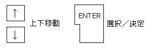
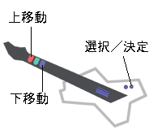
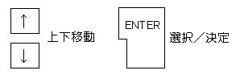
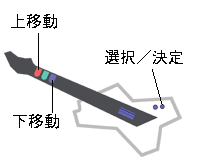

キーボードの場合：
キーボードの場合：
- 矢印キーの上下で移動、Enterキーで決定。

- ドラムの場合：
- スネア打で上移動、ロータム打で下移動、シンバル打で決定。

- ギター／ベースの場合：
- 赤ボタンで上移動、青ボタンで下移動、STARTボタンで決定。

| 基本操作 |
■上下移動と決定
DTXMania での基本操作として、「カーソルの上下移動」と「決定（選択）」があります。
- 矢印キーの上下で移動、Enterキーで決定。

- スネア打で上移動、ロータム打で下移動、シンバル打で決定。
- 赤ボタンで上移動、青ボタンで下移動、STARTボタンで決定。
